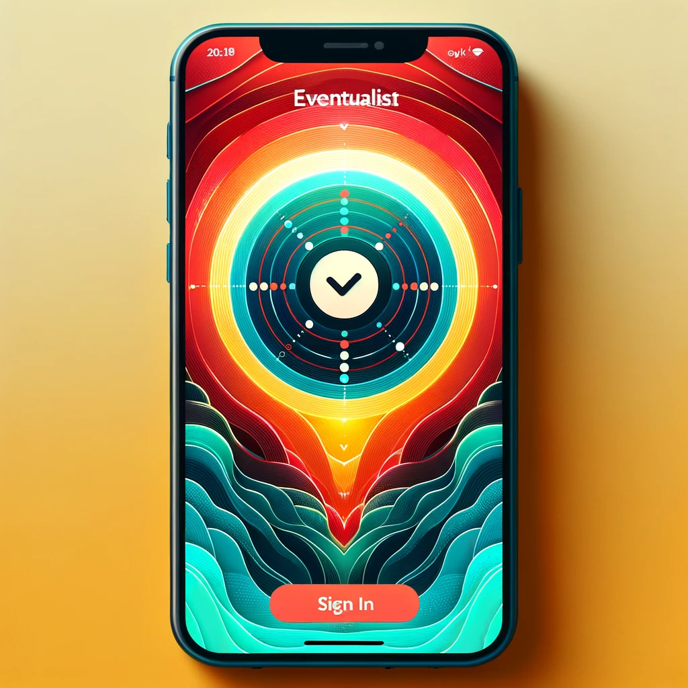
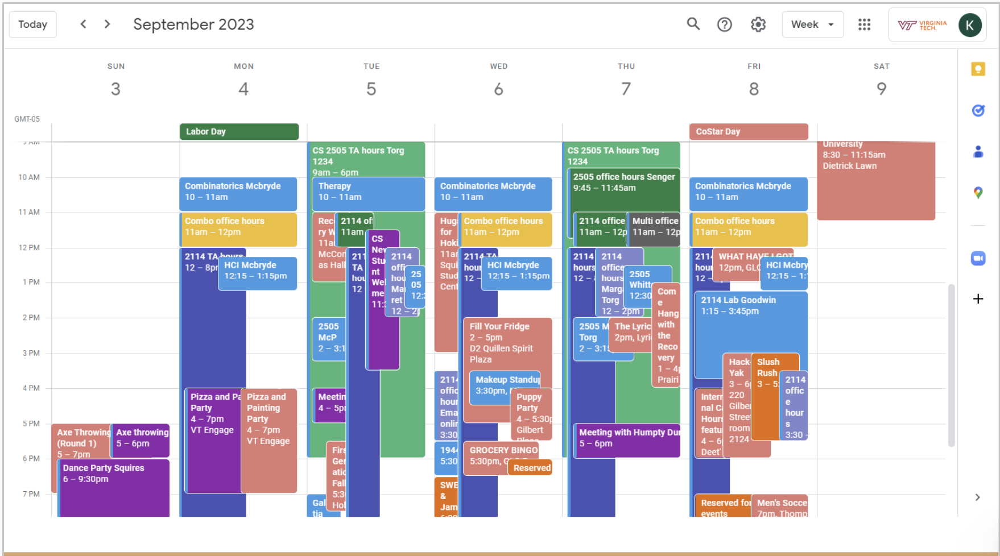
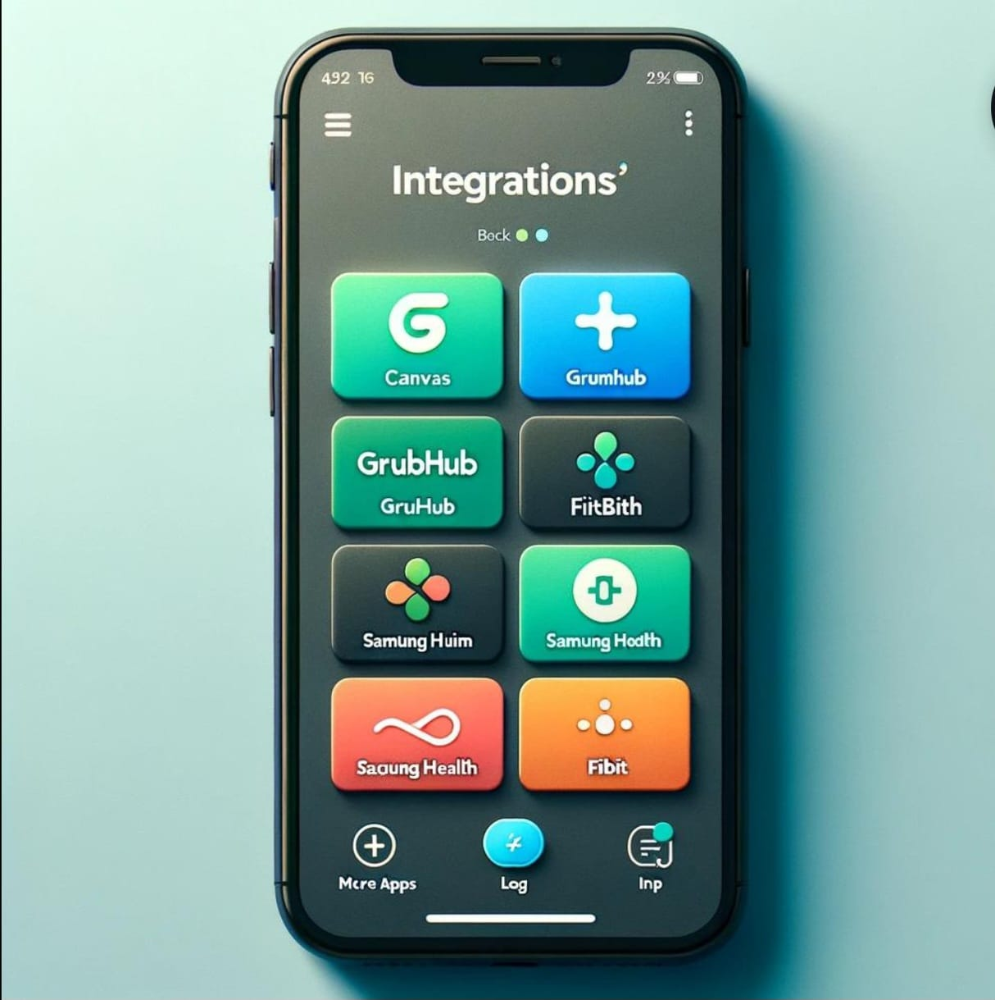

In my pursuit of a Computer Science degree with a specialization in Artificial Intelligence and Machine Learning, I led a critical initiative, Eventualist, under the mentorship of Dr. Andrew Kulak. This venture was an integral component of an advanced Human-Computer Interaction course, where my leadership was instrumental in navigating through intricate problem-solving scenarios.
Within the Eventualist framework, my primary responsibility was the architectural design and development of an AI-centric calendar application, specifically tailored to the needs of Computer Science students. This application amalgamated functionalities with platforms like Canvas, GrubHub, and GobblerConnect, employing sophisticated AI algorithms to revolutionize time management and optimize scheduling processes.
My expertise was pivotal in the integration of machine learning methodologies to meticulously analyze user behavioral data and generate custom routine suggestions. The crux of this endeavor involved crafting algorithms adept at deciphering and forecasting user preferences, significantly amplifying the user engagement and satisfaction within an e-commerce framework.
A crucial aspect of my role was the refinement of multi-modal search algorithms, ensuring that the application's search functionality aligned with top-tier industry benchmarks, thereby furnishing an intuitive and streamlined search experience for a broad user demographic.
Engaging in a multifaceted team environment, I spearheaded efforts to resolve complex issues such as balancing supply-demand dynamics and addressing business inception challenges, utilizing advanced machine learning models. These initiatives not only augmented the app’s operational efficiency but also propelled its trajectory towards sustainable business evolution.
My approach was anchored in a user-driven philosophy, where extensive testing and heuristic evaluations were conducted. This rigorous analysis was vital in refining the application's user interface and functionality, ensuring optimal usability, accessibility, and alignment with a diverse spectrum of user requirements.
Throughout the project, my application of programming languages like Python and Java was indicative of an advanced skillset in software development, blending creativity with technical acumen.
The success of the Eventualist project hinged on the harmonious integration of machine learning, software engineering, and human-computer interaction principles. My ability to adeptly navigate and excel in this multifaceted environment highlighted not only technical versatility but also intellectual agility.
The Eventualist initiative exemplifies a significant stride in the realm of AI and machine learning, contributing profound insights into human-computer interaction and the development of user-centric software solutions. This project stands as a beacon of interdisciplinary innovation, emphasizing the transformative impact of AI in contemporary technological landscapes.